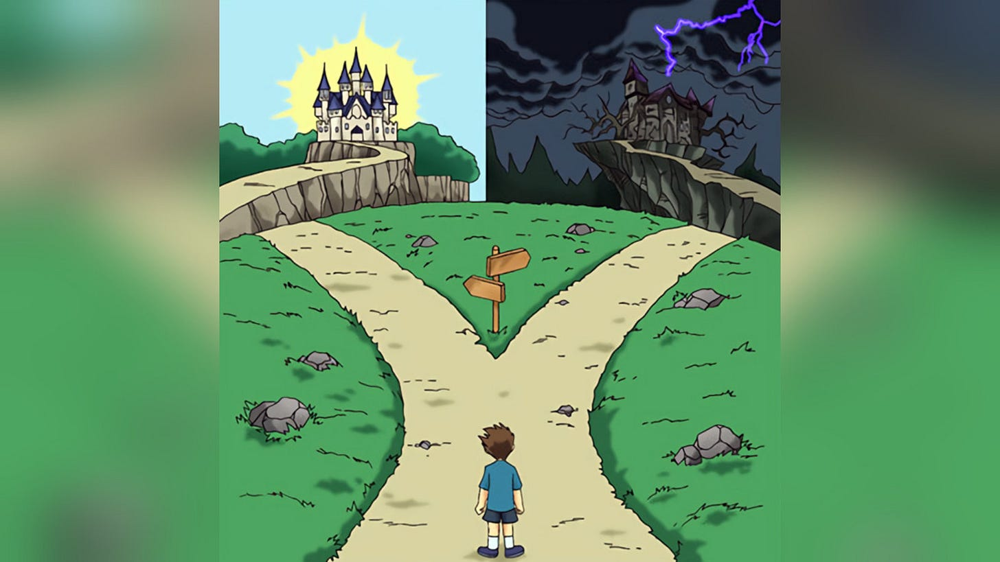

Lost Again
And what is my story?
For years, a decade and even more, I am trying to find my way, my focus, my passion and my purpose. I have tried endless times, in endless industries. I had tens, if not a hundred or so of product launches. I tried to work with others, by myself, with my brothers, for others. Why am I getting lost again, and why haven’t I find my authentic self? My story?
Last time I was as lost, slightly more even, was in 2020, when I spent a few months after finishing my service trying to build a new company, in the AI space. I locked myself in my room, all day, everyday - learning all about AI, and building, before it was sexy or cool. I was early to the LLM trend, and around that time, almost three years prior to ChatGPT release - I was already playing with GPT-2. With products like AIBro, which was an LLM helping you talking with girls, or Vivify, an app to clone your beloved ones from text messages, which I built after my grandma passed away. But I couldn’t get it off the ground, and slowly slowly I got lost.
I lost my way and broke all my promises, and joined a startup. It had its benefits, and I am grateful for that time - but it distracted me from my true quest.
I want to be the top innovator of our time. I want to contribute greatly to humanity, and our collective story, as well as to the Judaism-Israelites story. I want affect people’s everyday life, and be a character of aspiration and inspiration. I want to be a lover, a father, with a loving family. I want to be a better friend, the supporter kind, the one that is rooting for you. I want to be more easy-going, more friendly, better with people. I want to be one of the greats. I want to be the greatest. I want to matter.
I have ambition, I have ideas, and I execute. I don’t shy to express myself, and I put my creations out there in the world. And yet - I don’t feel like I am any close to the person I want, and ought to be — and every day, every year that passes, I feel ever farther from him.
I believe the reason for this is that I am missing one core feeling—the sense of a calling. Everything else is in place, and I was put here with my character in the perfect way to receive a calling. Yet, my faith is falling short, and I see the world as more meaningless than most.
It is as if I was gifted with too much agency, it all feels tasteless. I only wish I had faith, I had known my purpose. The thin thread that is still holding it all together is of the “soon”. I wonder if it will hold forever.
I do have a storyline in mind about how things can positively fall into place after all. I need to build a very successful company in the next two years while also increasing my public presence with my authentic self. I need to put myself out there not just with my products, but with my thoughts, ideas, and existence. I can’t keep this side-notes on Substack—I need to put it out there. That includes ideas around my shows, judaism, philosophy, history, society, startups, companies, and the future of humanity. I need to get more involved with more startups, from investments to building ones. But more than anything: I need more fucking wins.
I need to think bigger, I need to work harder.
The time passes, and I am losing momentum.
How can I become a main character?
Who am I?
What is my story?
—
This very essay and others I write here on Substack are actually not the first time I am writing about my struggles and my challenges of my journey. I started this concept in the 2018, with similar blog posts about my ambition and journey of building something big and meaningful — I encourage you to find them! ;)
